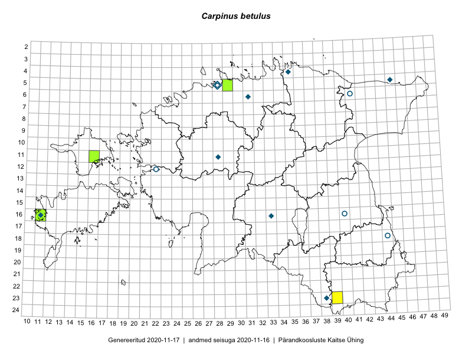

Carpinus betulus — harilik valgepöök
Corylaceae :: Carpinus betulus L. (17)

Kaart põhineb 17 kirjel:
herbaareksemplare 17
Taime kaasaegsed ja ajaloolised leiukohad asuvad 14 ruudus.
Tingmärgid ja ruutude arvud periooditi (U1 / V2 )
█ 2006–2020 (3/–)
◆/◇ 1971–2005 (8/1)
○ 1921–1970 (5/0)
+ kuni 1920 (0/0)
× hävinud (–/0)
? kaheldav (–/0)
| Ruut | Leidja(d) | Leiuaeg | Kirje |
|---|---|---|---|
| 12-22 | Gustav Vilbaste | 1933-07-06 | TAA0072018: Carpinus betulus L. |
| 23-38 | Pille Tomson | 2001-06-10 | TAA0072019: Carpinus betulus L. |
| 16-11 | J. Elliku | 2006-09-17 | TALL A009077: Carpinus betulus L. |
| 06-31 | O. Abner | 1997-07-13 | TALL A008992: Carpinus betulus L. |
| 11-16 | J. Elliku | 2008-06-18 | TALL A008961: Carpinus betulus L. |
| 16-40 | A. Paivel | 1961-07-13 | TALL A001427: Carpinus betulus L. |
| 05-28 | O. Abner | 2000-05-23 | TALL A001428: Carpinus betulus L. |
| 16-33 | J. Elliku | 2002-07-24 | TALL A001429: Carpinus betulus L. |
| 11-28 | O. Abner | 2001-07-09 | TALL A001430: Carpinus betulus L. |
| 04-35 | O. Abner | 1999-10-10 | TALL A001431: Carpinus betulus L. |
| 06-41 | A. Paivel | 1962-07-10 | TALL A001432: Carpinus betulus L. |
| 05-28 | A. Paivel | 1962-06-15 | TALL A001433: Carpinus betulus L. |
| 18-44 | A. Paivel | 1961-08-11 | TALL A001435: Carpinus betulus L. |
| 16-11 | J. Elliku | 1983-06-07 | TALL A001436: Carpinus betulus L. |
| 05-45 | J. Elliku | 1984-06-05 | TALL A001438: Carpinus betulus L. |
| 06-31 | J. Elliku | 2002-06-12 | TALL A001516: Carpinus betulus L. |
| 05-29 | Olev Abner | 2014-10-10 | TALL A011012: Carpinus betulus L. |
Ruutude arv uue atlase andmekogu järgi. Muuhulgas arvestab vanemat herbaariumi, 2005. aasta atlase välitöölehtedelt uuesti digitaliseeritud andmeid jne. Uue atlase andmekogust pärinevad andmed on kaardile kantud siniste sümbolitega.↩︎
Ruutude arv 2005. aasta atlase (Kukk, T., Kull, T., Eesti taimede levikuatlas. Eesti Maaülikool, Põllumajandus- ja Keskkonnainstituut, Tartu, 2005) järgi. Andmeallikana on kasutatud levik.exe programmi, kus igas ruudus on registreeritud vaid uusim leid. Seetõttu on vanemate perioodide kohta andmed puudulikud. Kasutatud levik.exe andmestikus leidub mõningaid kõrvalekaldeid atlase trükis ilmunud versioonist, sagedamini tarnade ja käpaliste seas. Lisaks leidub selles andmestikus valik liike (peamiselt väheste leidudega tulnuktaimed), mille kaarte trükis ei avaldatud. Vana atlase andmed ruutudest, milles ei ole uue atlase andmekogus leide enne 2006. aastat, on kaardil esitatud punaste sümbolitega. Vana atlase andmetel hävinud ja kaheldavaid leiukohti pole hilisemate (taas)leidude põhjal korrigeeritud.↩︎